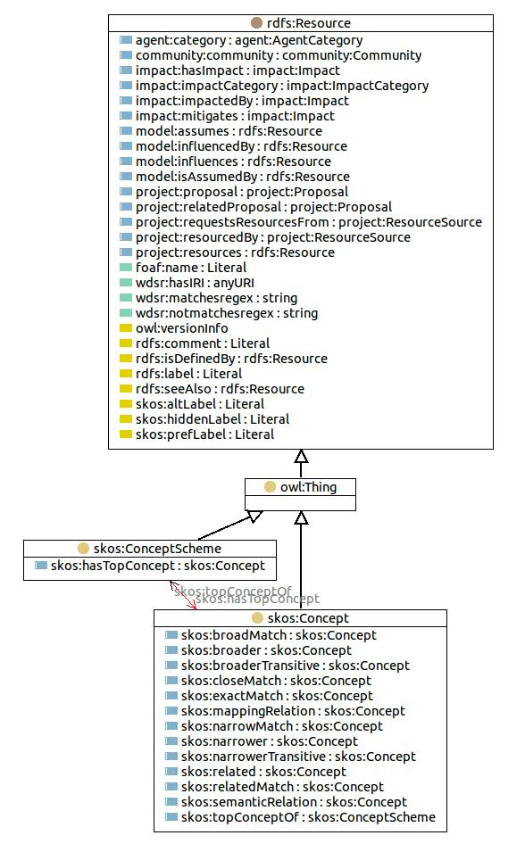

http://www.w3.org/2004/02/skos/core#Concept
Class skos:Concept

rdf:type
owl:Class
rdfs:isDefinedBy
SKOS Core RDF vocabulary
rdfs:label
Concept
rdfs:subClassOf
owl:Thing
skos:definition
An idea or notion; a unit of thought.
References
as owl:disjointWith (
skos:ConceptScheme
,
skos:Collection
)
as rdfs:domain (skos:topConceptOf, skos:semanticRelation)
as rdfs:range (skos:semanticRelation, skos:member, skos:hasTopConcept)
as rdfs:subClassOf (
impact:ImpactCategory
,
item:Category
,
project:ProposalStatus
,
agent:AgentCategory
,
community:Classification
)
Generated with
TopBraid Composer
by
TopQuadrant, Inc.